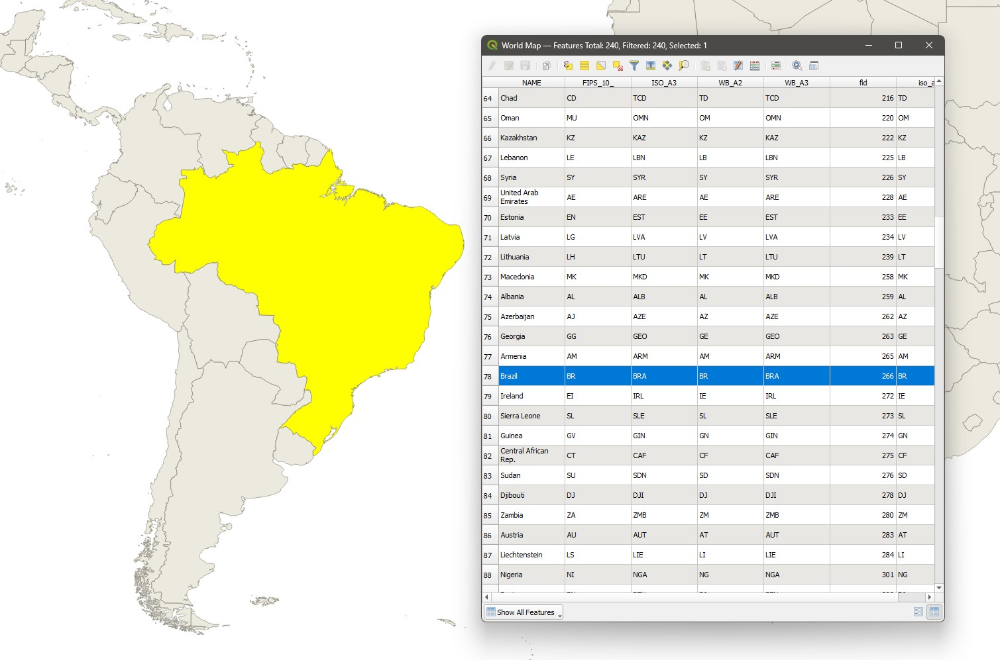
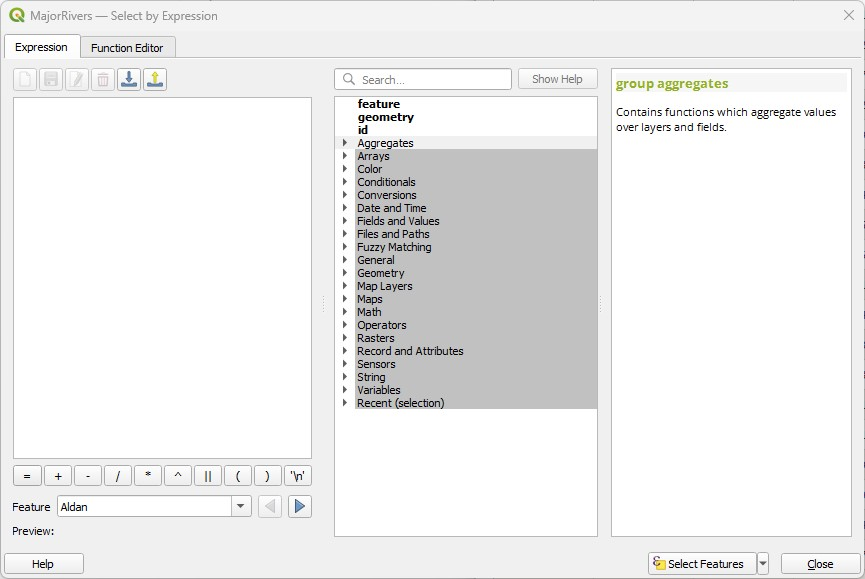
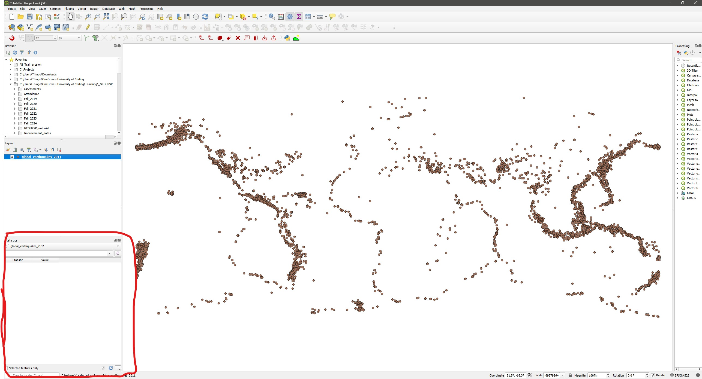
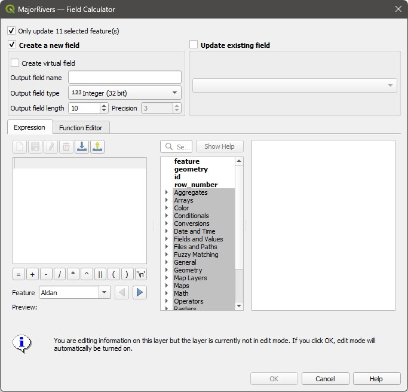

3 Lab 3: Working with vector attributes
Vector data consists of discrete observations called features. For example, on a vector layer representing all protected areas in Scotland, each individual protected area would comprise a feature. With regular data, observations are just rows on a table, but with vector spatial data, features are composed of two elements: the geometry (the visual component + coordinates) and attributes (columns on a table holding data about each feature, also known as fields).
On the figure below, each country is a feature - the shape of the country is represented by the geometry (left) and the corresponding attributes are shown in the right. Notice that both the geometry and the corresponding attributes of one specific feature (Brazil) are selected. Selections are a very important component of GIS analysis, as they can narrow down the targets for your calculations.

For this lab, we will focus mainly on the following GIS operations: filtering attributes, summarising attributes, and creating and modifying attribute data. Remember to apply, from here on, all the steps you have already learned in previous labs: create a project folder, organize your data, save a named project with proper CRS info, etc. Each week’s labs will build upon the previous activities, so I will not be repeating instructions for things covered in previous sessions.
3.1 Before you start!
- Go through the Week 2 preparatory session on Canvas, and watch the seminar recording if you have missed it.
3.2 Guided Exercise 1 - Basic work with Vector Data
In this exercise, you will learn how to open and read vector data.
Download the data for this exercise from here, then extract the zip files (make sure all the data are unzipped! Sometimes you have zipfiles inside zipfiles…) and organise them to your preference (use a similar folder structure as from week 1).
Load all three datasets in QGIS and inspect them. The file names are:
global_earthquakes_2011.gpkg,MajorRivers.shp, andne_50m_admin_0_countries.shp.
What are the datasets you have?
What are the data models used by these datasets?
What are the file formats you have to work with?
Which of these files contain metadata about your datasets?
What is the CRS of each data layer you have?
Check your Project properties to make sure they are correct (does the project CRS match the layers? What are the measurement units set for this project? Have you set the base folder?). Then save your project file within your folder structure as in previous labs.
Now inspect the attribute table for each layer, by right-clicking on each layer name and then on
Open Attribute Table. Then answer the following questions:
How many features does each layer have?
How many attributes does each feature have?
Tip: if you go to Properties > Fields, you get a list of all attributes ordered by ID, which is a sequential number. That makes it easier to count attributes when there are many.
Rename your layers on the layer list to human-readable, informative names, then save your project. Remember, these new names will appear within this project only, the name of the source files in your folders will not change.
Organize the layer order and play with different layer superpositions to make the most readable visualisation for all datasets involved. Then experiment with the symbology of each layer to improve your visualization.
3.3 Guided Exercise 2: Visualising layer attributes
One of the main applications of vector data is the ability to select and then summarise the different attributes of each layer to extract relevant information.
Turn off the “Rivers” and “Earthquakes” layers. (Tip: to turn multiple layers off or on at once, highlight all the layers you need to make hidden (or visible) by holding down the
Controlkey of your keyboard while you click, then hit the spacebar on your keyboard).Go to
Layer Properties > Symbologyfor the World Countries layer, and change the top option fromSingle SymboltoCategorized. This lets you assign different colours based on attribute values. We will colour the countries based on the main region where they are. So forValue, choose theREGION_UNattribute. Leave theSymboloption as is, and forColor Ramp, selectRandom Colorsif not already. Then click on theClassifybutton on the bottom left of the large white space in the middle of the window. Then click onOK.Look at your layer and notice how it has been styled. Try to manually change the colours of each region to your liking.
Now lets use visualisation to understand the distribution of world population.
Return to the
Symbologywindow and selectGraduatedinstead ofCategorized. Change yourValueto thePOP_ESTattribute. ChooseMagmaas your colour ramp (click on the little arrow to the right), and select theInvert Color Rampoption.Change the classification
Mode(above the classify button) toEqual interval, leave the number ofClassesas 5 (to the left ofMode), and then click onClassify, thenOK.
What is the difference between the
CategorizedandGraduatedoptions?Does the
Equal Intervalclassification give a good visualization of the distribution of world population?
- Return to the
Symbologywindow, and change theModefromEqual IntervaltoNatural Breaks (Jenks), and increase the number ofClassesto 10. Click onOK.
When you are mapping your own data, make sure you explore the different methods for calculating breakpoints, and also play with the number of classes. You can see the ful explanation of each Mode on the QGIS Documentation.
3.4 Guided Exercise 3: Selections based on layer attributes
Now we will look into using expressions to search and select specific features according to their attributes. As GIS vector data emerged from the database world, these searches as sometimes refered to as queries.
Change the symbology of the Countries layer to
Single Symbol, and pick a dark gray. Then turn on the Rivers layer, change its symbology to a light blue, and make sure it is on top of the Countries layer.Open the Rivers layer attribute table (right click on its name then on
Open attribute table). Then click on theSelect features using expressionbutton ( ). You will see a new window with three panels, like the one below. If you only see two panels, then click on
). You will see a new window with three panels, like the one below. If you only see two panels, then click on Show help:

You will encounter this expression window in other parts of QGIS as well. The way it works is that you type your expression on the left window, using the middle and right panels to browse and select operators to add to your expression. It will make more sense with an example:
In the middle panel, expand the
Fields and Valuesitem and then double click onKILOMETERS. It will add this attribute name to the left panel. Notice that it is enclosed by double quotes. In the expression window, any word between double quotes means it is an attribute’s name. You can also type names directly in the window if you prefer, and QGIS will offer autocomplete suggestions based on the existing attributes.Now complete the expression by typing the remainder, so that the final expression is
"KILOMETERS" > 5000. This expression means “Select all River features that have a length - represented by the KILOMETERS attribute - larger than 5000”. Then click on theSelect featuresbutton.Check the results of your selection on the Attribute Table. The number of selected features should be shown on the top of the window (11), and selected features will be highlighted in blue. On the bottom left of the window, you can change from
Show all featurestoShow selected featuresif you only want to see the selected features.Also check the results of your selection on the Map canvas. All selected features will be highlighted in yellow. Tip: if you ever set the symbology of a feature yellow, remember to not confuse it with selected objects. When in doubt, check the attribute table.
It seems the selection is missing a few of the longest rivers in the world, such as the Amazon River. Why would that be?
Hint: try to use the manual selection tool ( ) to click on the Amazon River and investigate.
) to click on the Amazon River and investigate.
- Return to the attribute table and make sure that the rivers larger than 5000km are still selected. Then create a new expression:
SYSTEM" = 'Amazon'. Notice that we enclose the word Amazon with single quotes. This identifies this as a string, i.e. a character value, and differentiates it from an attribute name. Then instead of clicking onSelect Features, click on the small arrow to the right and click inAdd to Current Selection. Now your selection should include all river features that are longer than 5000 km or belong to the Amazon system (26 features in total).
Tip: If you can’t remember all the possible values of an attribute, select the attribute under Fields and Values and then on the right panel, double click on All Unique. QGIS will list all possible value options for that particular attribute.
- Now deselect all features by clicking on the
Deselectbutton in the Attribute Table ( ) or the
) or the Deselect from all layersbutton in the main QGIS toolbar ( ). It is always good to clear selections when you are done with a certain analysis, to avoid unexpected consequences.
). It is always good to clear selections when you are done with a certain analysis, to avoid unexpected consequences.
We can use several operators to create expressions. For numeric values, we can use all logical operators: ‘greater than’ (>), ‘lesser than’ (<), their ‘or equal’ variants (<=, >=) as well as ‘equal’ (=) or ‘not equal’ (<>). For strings (text), = and <> also work, but you can use the operators IS and IS NOT (all upper case) instead. In the example above, we could have used "SYSTEM" IS 'Amazon' to get the same result.
Another class of useful operators are called Boolean operators: AND, OR and NOT. They allow us to create compound expressions with multiple criteria:
Return to the attribute table and this time use the following expression:
"KILOMETERS" > 5000 OR "SYSTEM" = 'Amazon'. You should get the same results as when you used two separate selections withAdd to Current Selection. But boolean operators can be more powerful.Clear your selection and create a new one with the expression
"KILOMETERS" > 1000 AND "SYSTEM" = 'Amazon'. When you use theANDoperator, each feature must fulfil both criteria (like an intersection in set theory, if you remember your maths). When you use theORkeyword, then each feature can fulfil either criteria (a mathematical union).Now change the expression to
"KILOMETERS" > 1000 AND "SYSTEM" IS NOT 'Amazon'and see what you get. Do you understand the effect of using theNOToperator?
Finally, we have two useful operators for partial matching on strings. They are useful when you need to select based on a subset of string (word) values of an attribute:
Clear your selection and create a new one with the expression
"NAME" LIKE 'Am%'. This should select all three rivers whose name starts with ‘Am’ (Amazon, Amu Darya and Amur). The ‘%’ symbol in this case is what we call a ‘wildcard’, and it means ‘anything else’.Now use the expression
"NAME" LIKE 'C____'(four underscores, ’_‘). This should select all rivers whose name starts with ’C’ followed by any four characters (So it picks Congo and Chire).
How many rivers would you get if you changed the above expression to "NAME" LIKE 'C%'?
- Finally, create a selection with the expression
"NAME" LIKE 'AM%'(notice the uppercase). You won’t get any results. Then change the expression to"NAME" ILIKE 'AM%'. You should get the same three rivers starting with ‘Am’ again.
What is the difference between LIKE and ILIKE?
- Before you move on to the next exercise, make sure you clear your selection.
3.5 Guided Exercise 3: Summarising layer attributes
The Statisitcal Summary Tool ( ) is a quick way to summarise attribute values, and can be quite powerful when combined with attribute selections.
) is a quick way to summarise attribute values, and can be quite powerful when combined with attribute selections.
- On the main QGIS window, click on the
Statistical Summarytool button. A new panel will open on the bottom left corner of the QGIS window.

- Select the “Rivers” layer as input, then select the
KILOMETERSattribute on the drop-down menu. You will get a table with several summary statistics calculated for all features in the layer.
What are the longest, shortest, and mean kilometre lengths in the dataset?
Now repeat the attribute selection you did before using the expression
"KILOMETERS" > 5000, and then return to theStatistical Summarypanel. Then check theSelected Features Onlybox at the bottom of the window. Now the stats will be re-calculated for the selected features only.The
Statistical Summarypanel is smart enough to know how to summarise different data types. For example, select theSYSTEMattribute, and see how the stats change - now it gives you how many features in total (Count), how many unique values (Count(Distinct)), how many missing values (Count(Missing)), theMinimumandMaximumstring values (they don’t have a clear meaning here), the least (Minority) and most (Majority) common unique values, and theMinimum lengthandMaximum lengthin number of characters.
Why do you get a blank value for Majority and a 0 for Minimum Lenght?
3.6 Guided Exercise 4: Calculating new attributes
Another powerful way to derive information from vector attributes is to make calculations involving multiple attributes. For that, we can use the Field Calculator tool ( ), accessible either from the
), accessible either from the Attribute table or the main QGIS toolbar.
Before your start, make sure you clear your selections.
Go back to the Attribute Table window for the Rivers layer and click on the Field Calculator button to open it. It should look like this:

On the new window, make sure the
Only update selected featuresoption is not checked. Then name the new fieldMi_to_Km, and change the output data type toDecimal Number.Output field lengthtells you the maximum number of digits that can be stored per attribute value, and thePrecisionfield tells you how many of these digits should be decimal places.On the expression window, write
"MILES" / "KILOMETERS". Note the warning at the bottom. Now click onOK.Now turn off editing mode by clicking on the Toggle Editing (
 ) button in the Attribute Table. When asked, confirm you want to save the layer changes.
) button in the Attribute Table. When asked, confirm you want to save the layer changes.
Turning on editing mode is one of the most dangerous options in QGIS, as it lets you freely change both the geometry and the attribute values of a layer. Using the Field calculator automatically puts you on editing mode, so always make sure you turn it off immediately after you have finished a calculation. Once you make any changes and then save the changes, there is no turning back. I’ll often first export a copy of the layer if I need to do any edits, so I aways have the original as a backup if something goes wrong. We’ll revisit editing mode on week 4, when we learn how to digitise and edit geometries by hand.
Does the Miles to Km proportion you calculated seem right?
- This new attribute you calculated is not very useful. Let us get rid of it. Put the attribute table back into editing mode, then click on the
Delete Fieldbutton ( ), and select your
), and select your Mi_to_Kmfield. ClickOK. It’s gone! Remember to save the changes and exit edit mode.
Tip: if you want to rename an attribute, create a new one with the new name and just use the name of the old one as the expression on the Field Calculator. It will copy all values to the new attribute. Then remove the old one.
- We will continue working with this data in the next lab. If you want to keeo your project, this is the best way to do it: on your computer’s file explorer, find the root folder for the project (
lab_3, or whatever you have named it as). Then right click on it and select (on Windows)Compress to Zip file. That will create a new zipfile of the folder contents, with the same name as the folder. Then you can copy this zip file to your OneDrive folder or to an external drive.
Good job, we have now finished our first guided tour of vector attributes. We will revisit it in the next lab, when we also learn about geometry-based selections.
Make sure you have a go at the independent exercise below, to make sure you feel comfortable with attribute selections, calculations and summaries. You will keep using these skills for the rest of the module (and your GIS life).
3.7 Independent Exercise
Using the earthquakes layer you downloaded (global_earthquakes_2011.gpkg), do the following:
Find out how many earthquakes of magnitude equal or larger than 7 have occurred in the Northern Hemisphere in 2011.
What was the average magnitude of all earthquakes that occurred in Japan in 2011? (Tip: make sure you enlarge the
eventcolumn of the attribute table to the whole values).Create a new
Text (string)attribute that indicates if an earthquake is located on the western (W) or eastern (E) hemisphere.